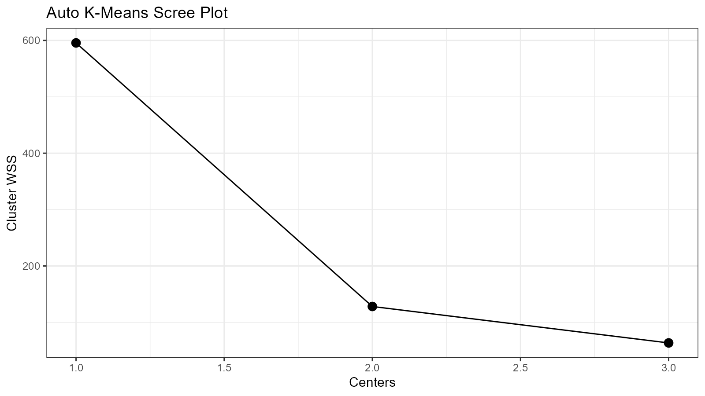

vignettes/auto-kmeans.Rmd
auto-kmeans.Rmd
library(healthyR.ai)
suppressPackageStartupMessages(library(dplyr))
suppressPackageStartupMessages(library(ggplot2))
suppressPackageStartupMessages(library(h2o))Many times in a project we want to perform some sort of clustering on a given set of data. This can be accomplished many different ways. This vignette will showcase how you can take a data set that is prepared, say like the internal iris file and process it with the healthyR.ai function hai_kmeans_automl().
First lets take a look at the data itself.
df_tbl <- iris
glimpse(df_tbl)
#> Rows: 150
#> Columns: 5
#> $ Sepal.Length <dbl> 5.1, 4.9, 4.7, 4.6, 5.0, 5.4, 4.6, 5.0, 4.4, 4.9, 5.4, 4.~
#> $ Sepal.Width <dbl> 3.5, 3.0, 3.2, 3.1, 3.6, 3.9, 3.4, 3.4, 2.9, 3.1, 3.7, 3.~
#> $ Petal.Length <dbl> 1.4, 1.4, 1.3, 1.5, 1.4, 1.7, 1.4, 1.5, 1.4, 1.5, 1.5, 1.~
#> $ Petal.Width <dbl> 0.2, 0.2, 0.2, 0.2, 0.2, 0.4, 0.3, 0.2, 0.2, 0.1, 0.2, 0.~
#> $ Species <fct> setosa, setosa, setosa, setosa, setosa, setosa, setosa, s~From here we can see that the data is already prepared and ready to go. There is a factor column that denotes the species or the row data and the columns are already numeric. Now the rest is fairly simple and straight forward. Let’s use the hai_kmeans_automl() function to create the list output that comes from it where we will want to use the Species column as the predictor based upon the features presented.
column_names <- names(iris)
target_col <- "Species"
predictor_cols <- setdiff(column_names, target_col)Now we have our column inputs for the function, so we can go ahead and run it.
h2o.init()
#>
#> H2O is not running yet, starting it now...
#>
#> Note: In case of errors look at the following log files:
#> C:\Users\Steve\AppData\Local\Temp\RtmpQl5A9M\file377839bd2dda/h2o_Steve_started_from_r.out
#> C:\Users\Steve\AppData\Local\Temp\RtmpQl5A9M\file377814c92085/h2o_Steve_started_from_r.err
#>
#>
#> Starting H2O JVM and connecting: Connection successful!
#>
#> R is connected to the H2O cluster:
#> H2O cluster uptime: 3 seconds 631 milliseconds
#> H2O cluster timezone: America/New_York
#> H2O data parsing timezone: UTC
#> H2O cluster version: 3.36.0.2
#> H2O cluster version age: 27 days
#> H2O cluster name: H2O_started_from_R_Steve_yyl488
#> H2O cluster total nodes: 1
#> H2O cluster total memory: 1.75 GB
#> H2O cluster total cores: 8
#> H2O cluster allowed cores: 8
#> H2O cluster healthy: TRUE
#> H2O Connection ip: localhost
#> H2O Connection port: 54321
#> H2O Connection proxy: NA
#> H2O Internal Security: FALSE
#> H2O API Extensions: Amazon S3, Algos, Infogram, AutoML, Core V3, TargetEncoder, Core V4
#> R Version: R version 4.1.0 (2021-05-18)
output <- hai_kmeans_automl(
.data = df_tbl,
.predictors = predictor_cols,
.standardize = FALSE
)
#>
|
| | 0%
|
|======================================================================| 100%
#>
|
| | 0%
|
|======================================================================| 100%
h2o.shutdown(prompt = FALSE)This function gives a lot of output inside of it. From here we will discuss what comes out of the function.
Lets take a look at the structure of the output object. It is a list of lists with four main components. They are the following:
ggplot2 object)Lets explor each of these items.
Inside of the data list there are several sections. We can view and access these very simply. You will find that all of the outputs have been labeled in a very simple to understand manner.
output$data
#> $splits
#> $splits$training_tbl
#> # A tibble: 123 x 5
#> Sepal.Length Sepal.Width Petal.Length Petal.Width Species
#> <dbl> <dbl> <dbl> <dbl> <fct>
#> 1 5.1 3.5 1.4 0.2 setosa
#> 2 4.9 3 1.4 0.2 setosa
#> 3 4.7 3.2 1.3 0.2 setosa
#> 4 5 3.6 1.4 0.2 setosa
#> 5 5.4 3.9 1.7 0.4 setosa
#> 6 4.6 3.4 1.4 0.3 setosa
#> 7 5 3.4 1.5 0.2 setosa
#> 8 4.4 2.9 1.4 0.2 setosa
#> 9 5.4 3.7 1.5 0.2 setosa
#> 10 4.8 3.4 1.6 0.2 setosa
#> # ... with 113 more rows
#>
#> $splits$validate_tbl
#> # A tibble: 27 x 5
#> Sepal.Length Sepal.Width Petal.Length Petal.Width Species
#> <dbl> <dbl> <dbl> <dbl> <fct>
#> 1 4.6 3.1 1.5 0.2 setosa
#> 2 4.9 3.1 1.5 0.1 setosa
#> 3 5.8 4 1.2 0.2 setosa
#> 4 5.1 3.5 1.4 0.3 setosa
#> 5 5.7 3.8 1.7 0.3 setosa
#> 6 5.1 3.8 1.5 0.3 setosa
#> 7 5.4 3.4 1.7 0.2 setosa
#> 8 5.1 3.7 1.5 0.4 setosa
#> 9 5 3.4 1.6 0.4 setosa
#> 10 4.7 3.2 1.6 0.2 setosa
#> # ... with 17 more rows
#>
#>
#> $metrics
#> $metrics$training_metrics
#> # A tibble: 3 x 3
#> centroid size within_cluster_sum_of_squares
#> <dbl> <dbl> <dbl>
#> 1 1 36 11.0
#> 2 2 51 30.8
#> 3 3 36 21.2
#>
#> $metrics$validation_metrics
#> # A tibble: 3 x 3
#> centroid size within_cluster_sum_of_squares
#> <dbl> <dbl> <dbl>
#> 1 1 14 4.16
#> 2 2 11 9.21
#> 3 3 2 2.69
#>
#> $metrics$cv_metric_summary
#> # A tibble: 5 x 8
#> metric_name mean sd cv_1_valid cv_2_valid cv_3_valid cv_4_valid cv_5_valid
#> <chr> <dbl> <dbl> <dbl> <dbl> <dbl> <dbl> <dbl>
#> 1 betweenss 94.7 18.5 120. 106. 82.4 73.9 91.1
#> 2 mse NaN 0 NaN NaN NaN NaN NaN
#> 3 rmse NaN 0 NaN NaN NaN NaN NaN
#> 4 tot_within~ 13.9 3.36 15.5 13.0 17.2 8.48 15.2
#> 5 totss 109. 20.0 135. 119. 99.6 82.4 106.
#>
#>
#> $original_data
#> Sepal.Length Sepal.Width Petal.Length Petal.Width Species
#> 1 5.1 3.5 1.4 0.2 setosa
#> 2 4.9 3.0 1.4 0.2 setosa
#> 3 4.7 3.2 1.3 0.2 setosa
#> 4 4.6 3.1 1.5 0.2 setosa
#> 5 5.0 3.6 1.4 0.2 setosa
#> 6 5.4 3.9 1.7 0.4 setosa
#>
#> [150 rows x 5 columns]
#>
#> $scree_data_tbl
#> # A tibble: 3 x 2
#> centers wss
#> <dbl> <dbl>
#> 1 1 596.
#> 2 2 128.
#> 3 3 63.5
#>
#> $scoring_history_tbl
#> # A tibble: 8 x 6
#> timestamp duration iterations number_of_cluste~ number_of_reass~
#> <chr> <chr> <dbl> <dbl> <dbl>
#> 1 2022-02-22 13:28:13 " 0.332 sec" 0 0 NaN
#> 2 2022-02-22 13:28:13 " 0.337 sec" 1 1 123
#> 3 2022-02-22 13:28:13 " 0.338 sec" 2 1 0
#> 4 2022-02-22 13:28:13 " 0.344 sec" 3 2 6
#> 5 2022-02-22 13:28:13 " 0.345 sec" 4 2 0
#> 6 2022-02-22 13:28:13 " 0.350 sec" 5 3 8
#> 7 2022-02-22 13:28:13 " 0.351 sec" 6 3 1
#> 8 2022-02-22 13:28:13 " 0.352 sec" 7 3 0
#> # ... with 1 more variable: within_cluster_sum_of_squares <dbl>
#>
#> $model_summary_tbl
#> # A tibble: 7 x 2
#> name value
#> <chr> <dbl>
#> 1 number_of_rows 123
#> 2 number_of_clusters 3
#> 3 number_of_categorical_columns 0
#> 4 number_of_iterations 7
#> 5 within_cluster_sum_of_squares 63.0
#> 6 total_sum_of_squares 548.
#> 7 between_cluster_sum_of_squares 485.Now for the auto-ml object itself.
output$auto_kmeans_obj
#> Model Details:
#> ==============
#>
#> H2OClusteringModel: kmeans
#> Model ID: KMeans_model_R_1645554485626_1
#> Model Summary:
#> number_of_rows number_of_clusters number_of_categorical_columns
#> 1 123 3 0
#> number_of_iterations within_cluster_sum_of_squares total_sum_of_squares
#> 1 7 63.04461 547.72911
#> between_cluster_sum_of_squares
#> 1 484.68450
#>
#>
#> H2OClusteringMetrics: kmeans
#> ** Reported on training data. **
#>
#>
#> Total Within SS: 63.04461
#> Between SS: 484.6845
#> Total SS: 547.7291
#> Centroid Statistics:
#> centroid size within_cluster_sum_of_squares
#> 1 1 36.00000 11.03694
#> 2 2 51.00000 30.78627
#> 3 3 36.00000 21.22139
#>
#> H2OClusteringMetrics: kmeans
#> ** Reported on validation data. **
#>
#>
#> Total Within SS: 16.06623
#> Between SS: 85.86044
#> Total SS: 101.9267
#> Centroid Statistics:
#> centroid size within_cluster_sum_of_squares
#> 1 1 14.00000 4.16341
#> 2 2 11.00000 9.20845
#> 3 3 2.00000 2.69437
#>
#> H2OClusteringMetrics: kmeans
#> ** Reported on cross-validation data. **
#> ** 5-fold cross-validation on training data (Metrics computed for combined holdout predictions) **
#>
#>
#> Total Within SS: 69.35454
#> Between SS: 478.3745
#> Total SS: 547.7291
#> Centroid statistics are not available.
#> Cross-Validation Metrics Summary:
#> mean sd cv_1_valid cv_2_valid cv_3_valid cv_4_valid
#> betweenss 94.700810 18.485971 119.935500 106.219124 82.400090 73.895650
#> mse NA 0.000000 NA NA NA NA
#> rmse NA 0.000000 NA NA NA NA
#> tot_withinss 13.870908 3.362191 15.468335 13.010504 17.196190 8.476975
#> totss 108.571724 20.036627 135.403840 119.229630 99.596280 82.372630
#> cv_5_valid
#> betweenss 91.053710
#> mse NA
#> rmse NA
#> tot_withinss 15.202535
#> totss 106.256240We also have in the output the best model that is saved off.
output$model_id
#> [1] "KMeans_model_R_1645554485626_1"There is also a ggplot2 scree plot that is generated, this helps us to understand how many clusters are in the data resulting from minimizing the within sum of squares errors.
print(output$scree_plt)